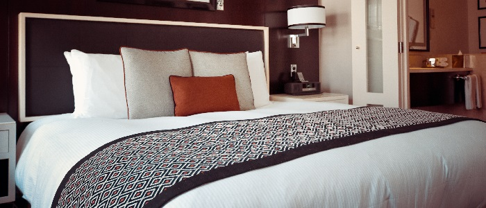
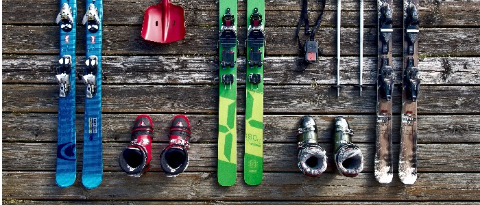
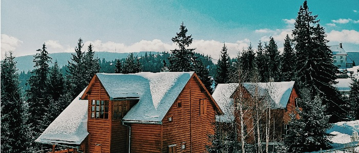

A hófödte Mesehegy tetjén fekszik a Kékhegy Szálló****, mely már 1870 óta várja vendégeit. A szállót Thomas Mann híres regénye, a Varázshegyből is ismerős Schatzalp Davos hotel tervei ihlették. Elnevezése a hegyoldal szikláit jellemzően színező vulkanikus achát foltokra utal. A szálló széles körű szolgáltatásokkal várja minden idényben a pihenni, sportolni vágyókat, a téli sportok szerelmeseitől a nyári hőség elől a hegyvidékbe kirándulni vágyókig. Vendégeink tágas összkomfortos szobákat, széles választékkal rendelkező éttermet, szauna- és medence részleget, rendszeres esti programokat és kedvezményes sportkölcsönzési lehetőségeket találnak nálunk. 60 fős személyzetünk az év minden napján várja a vendégeket!
2-4-6 személyes szobák
Nálunk minden kombinációt megtalál, érkezzenek akár romantikus kirándulásra vagy céges üdülésre.
4 személyes családi lakosztályok (közös hálóval, nappalival): 12 darab
6 személyes lakosztályok (3 hálóval): 12 darab
Étterem
Kovács Sebastian mesterszakácsunk gondoskodik az a'lacarte éttermünk kínálatóról, a hotel étterem részlegén.
Konferenciák, rendezvények lebonyolítását is vállaljuk!

Téli sporteszköz kölcsönzés
A hegyvidéken található számos sípályához biztosítunk kedvezményes áron sífelszerelést.
Amennyiben nálunk foglal, akár 50%-os kedvezményre is jogosult lehet a bérlés árából! A részletekért érdeklődjön a recepciósunknál.
Túravezetés
A Kékhegy még a Mátránál is magasabb, 1337 méter magasan fekvő tája és bizonyítottan különlegesen jóminőségű hegyi levegője évtizedek óta méltán híres turistaparadicsom az egész évben. Vezetett gyalogtúráink egész évben rendelkezésre állnak.
Kétfős szoba
- 12.000 Ft/nap
- 2 fő részére
- Franciaágy
- Ingyen wifi
- Igény szerint reggeli
- Igény szerinti teljes étkezés
- KábelTV
- 30% kedvezmény a sporteszköz kölcsönzésből
Négyszemélyes lakosztály
- 20.000 Ft/nap
- 4 fő részére
- 2 külön hálószoba
- Igény szerint francia- vagy külön ágyak
- Igény szerint reggeli
- Igény szerinti teljes étkezés
- KábelTV
- 40% kedvezmény a sporteszköz kölcsönzésből
Hatszemélyes lakosztály
- 24.000 Ft/nap
- 6 fő részére
- 3 külön bálószoba
- Igény szerint francia- vagy külön ágyak
- Igény szerint reggeli
- Igény szerinti teljes étkezés
- KábelTV
- 50% kedvezmény a sporteszköz kölcsönzésből